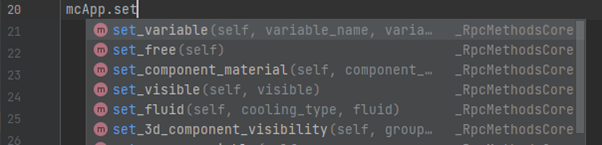
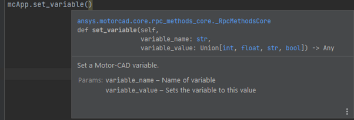

Backwards compatibility with old scripts#
You can convert old ActiveX scripts to use PyMotorCAD as indicated in the subsequent sections.
Change communication method#
Old ActiveX scripts use this code to connect to Motor-CAD:
import win32com.client
mcApp = win32com.client.Dispatch("MotorCAD.AppAutomation")
To use PyMotorCAD to connect to Motor-CAD, you replace the preceding code with this code:
import ansys.motorcad.core as pymotorcad
mcApp = pymotorcad.MotorCADCompatibility()
While changing the communication method allows old ActiveX scripts to be converted with minimal changes, some of the new features of PyMotorCAD are turned off to ensure compatibility of these older scripts.
Convert script fully#
To convert an old script so that it can use new PyMotorCAD features, you must change change function names in the script to use Python syntax and update the function syntax.
Change function names#
Python code conventions specify the use of snake case for function names. Thus, all functions in the MotorCAD API use lower case with underscores (snake_case).
For example, the function call for getting a variable in an old ActiveX script looks like this:
McApp.GetVariable()
The function name must be changed to use the Python function name:
mcApp.get_variable()
If you are using a modern Python IDE, changing function names is straightforward because the IDE suggests functions based on your input:
{kind=link}
Built into the Python package is documentation that explains what functions do and what parameters they require:
{kind=link}
Additionally, you can search for functions in the MotorCAD API.
Update function syntax#
In old ActiveX scripts, functions returned a success variable that would need to be checked to ensure an API call had been successful:
success, VariableValue = mcApp.GetVariable("Not_A_Real_Var")
This meant that API calls could fail silently unless you checked the success variable every time. This success variable has been removed because PyMotorCAD raises an exception if a failure occurs:
variable_value = mcApp.get_variable("Not_A_Real_Var")
{kind=link}
For cases where you might expect the API call to fail, you should wrap it in a try/except.
For example, the following script reads graph points until the end of the graph.
The MotorCADError exception type is used so that only errors raised by MotorCAD are caught:
import ansys.motorcad.core as pymotorcad
from ansys.motorcad.core import MotorCADError
mcApp = pymotorcad.MotorCAD()
mcApp.do_magnetic_calculation()
i = 0
torque = []
reading_graph = True
while reading_graph is True:
try:
x, y = mcApp.get_magnetic_graph_point("TorqueVW", i)
torque.append(y)
i = i + 1
except MotorCADError:
reading_graph = False